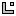

Tässä se on. Kaikkien rakastama automaattinen törmäyksentunnistus. Etkä tarvitse juuri muuta kuin tämän komennon! Tällä komennolla esittelet CoolBasicille mitkä objektit voivat törmätä keskenään ja siten eivät voi mennä päällekkäin tai kulkea lävitse. Tämä tapahtuu esittelemällä CoolBasicille kaksi objektia, törmäyksen tyypit sekä menettelytapa törmäyksen sattuessa. Aivan kaikkia mahdollisia törmäysyhdistelmiä ei ole vielä saatavilla, mutta niitä lisätään tulevissa ohjelmapäivityksissä. Voit esitellä seuraavat törmäykset:
| Törmäävä | -> | Törmättävä | Menettelytavat | Esitys |
(laatikko) 1 |
-> | (laatikko) 1 |
liukuva 2 |
1,1,2 |
(laatikko) 1 |
-> |  (kartta) 4 |
liukuva 2 |
1,4,2 |
 (pallo) 2 |
-> | (pallo) 2 |
pysähdys (1) liukuva (2) |
2,2,1 2,2,2 |
(pallo) 2 |
-> | (kartta) 4 |
pysähdys (1) liukuva (2) |
2,4,1 2,4,2 |
Jos et tajunnut taulukosta mitään, otetaan esimerkki. Haluat pallo-pallo -törmäyksen. Haluat sen liukuvana. Joten katsot taulukosta... se on siis 2,2,2.
Karttaa tai liikkumatonta pelimaailmaa koskevat törmäykset kannattaa esitellä viimeiseksi.